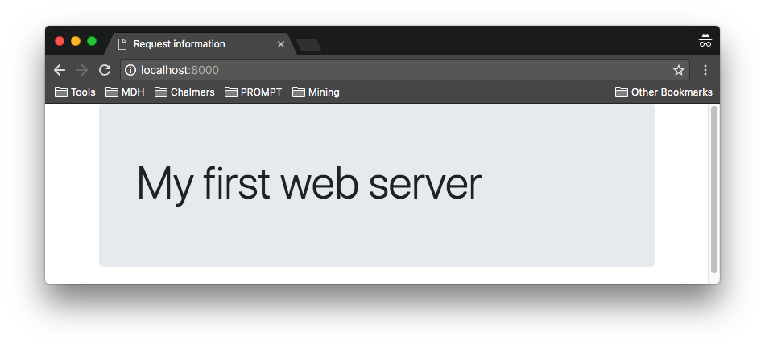
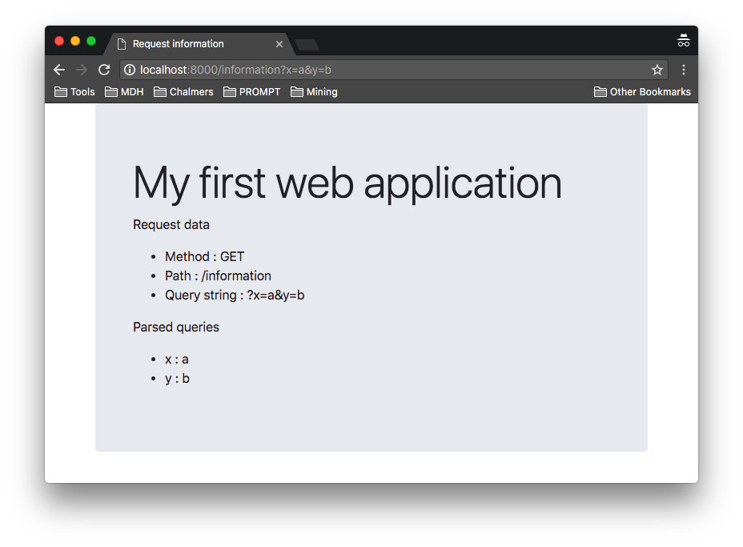

This laboration introduces modern web development with node.js. We will cover the following topics: how to serve static files, how to send information back to the server using GET and POST, and finally, how to build a minimal web application.
The final product of this is a web application intended to be open to attacks. The material presented in this laboration should not be seen as suggestions on how to build secure web applications. On the contrary, we have deliberately chosen some elements to make sure that the application contains security flaws!
After completion of the exercises you are expected to have a working, but flawed, web application.
Download and install node.js. Make sure you are using the a recent version of node.js. Bot the Current version and the LTS version should be fine. Make sure node and npm are available on the command
line.
$ node -v v20.2.0 $ npm -v 9.7.2
For this lab we will be using the HTTP library that provides support for both HTTP servers and HTTP clients. Implementing support for HTTP/1.1 is complex and error-prone. In particular, the library provides support for
The following program creates a server. The
createServer
method takes a callback, a request listener, that is given the incoming request message,
req, and the server response,
res. The request listener is invoked for every
request event.
var http = require('http');
var server = http.createServer((req, res) => {
console.log(req.method + " " + req.url + " " + req.httpVersion);
res.end();
});
server.listen(8000);This server listens to port 8000, and prints the method, the url and http version of all incoming requests. In order for the client not to hang, it terminates the request without sending back any information.
Save the code to file httpd.js and start it using node httpd.js. Navigate to
the server using the URL http://localhost:8000/. This should yield
a blank page in the browser and
the following output from the server.
$ node httpd.js GET / 1.1
Please use port 8000 in your web application - it makes grading easier if everyone uses the same port.
Modify the server to return a "Hello World" page using the
server
response
res. Make sure you set the Content-Type type
to text/html and the response status code to
200. When done your web server should behave similarly to the example
solution.
Start and test the server by connecting to http://localhost:8000/. Does the exact path of the URL matter? Try, e.g., http://localhost:8000/does/the/path/matter.
The most basic functionality of a web server is to serve content. To request a resource from a web
server the GET method is used together with a URL that locates the resource on the server. As we saw above, the request URL is accessible from the request object via the url property.
In
the most simple form, a static web
server translates the URL to a file in the file system that is returned as the result of the request.
When returning a resource from a web server it is important to let the browser know what kind of
resource is being returned. This can be done by specifying a MIME type in the Content-Type
response header. A common way for
a generic static web server is to tie file extensions to mime types as exemplified by the following
table (non-exhaustive):
| extension | MIME type |
|---|---|
| .html | text/html |
| .css | text/css |
| .js | text/javascript |
In this exercise, we will create a web server that serves files from a dedicated directory called public. The file system structure of the web server will be as follows.
| Path | Description |
|---|---|
| public/ | Directory with static files served by the static fallback. |
| httpd.js | The web server implementation. |
Populate the public directory using the following using the public.zip archive that contains a Boostrap based page, which we will use as the basis for further development in addition to a few selected pictures of Icelandic volcanoes. Visiting the web server should render the page below.
In addition to serving static files, the web server should handle request paths that resolve to directories in the following manner:
index.html file, serve the contents of that fileindex.html file, serve a directory listingLetting the server render a directory listing with link allows us to use the web server as a simple file server. This is a relatively feature of many web servers, e.g. the Apache web server. For examples use the following link to search for images matching the search term "apache directory listing".
Note that the URL the server receives may contain percent-encoded characters. To be able to properly use such URLs you must decode them before use. This can be done using thedecodeURIComponent.
let path = decodeURIComponent(req.url);In this simple example, we know that the url only contains the path to the requested object. More generally, the URL can contain several different things, and decoding would be done on the various URL components after parsing the URL (as indicated by the name of the decode function).
Start and test the server by connecting to http://localhost:8000/. It should behave similarly to the example solution. Make sure that you can list all the http://localhost:8000/icelandic volcanoes/ and view the pictures by clicking the links.
The GET method is intended to be used to retrieve a resource from the server, e.g., and
html page, a css document or a picture. Requesting a resource using GET should not modify
the state of the server; browsers
will assume that using GET is idempotent and will resubmit requests without asking.
In addition to the requested resource, the URL of a GET request may pass information about
the request in terms of the query parameters. The query parameters follow a ? at the end of the URL and
consists of a & separated sequence
of name=value pairs and is sent as part of the request header.
http://localhost:8000/index.html?parameter1=value1¶meter2=value2
As an example, Google uses the query string to pass users search queries, which allows linking to a specific search, e.g., https://www.google.com/search?q=nodejs which represents a Google search for Node.js.
The POST method is intended to be used to send information to the server, e.g., submitting
a form, placing an order or posting a comment. The main difference between POST and
GET is that POST is not supposed to be idempotent and will not be
automatically resent by the browser. Instead, the browser typically asks the user if the form should
resubmitted or not.
The POST data is sent in the message body, and may be encoded in a number of different
ways, including being split up into multiple chunks sent one by one.
To experiment with sending and receiving information, we are going to add a form to POST
information back to the server.
Modify index.html file to include a
form to be
able to experiment with the POST method.
<form action="index.html" method="POST">
<div class="form-group">
<label for="email">Email address</label>
<input type="email" name="email" class="form-control" id="email" placeholder="Enter email">
</div>
<div class="form-group">
<label for="password">Password</label>
<input type="password" name="password" class="form-control" id="password" placeholder="Password">
</div>
<button type="submit" class="btn btn-primary">Submit</button>
</form>
When submitted the form sends the values of its named input and button elements to the location
specified by the action attribute. If no method and enctype is specified
POST is used and the
information is transferred application/x-www-form-urlencodedi.e., as a sequence of
key/value pairs stored in the body. Forms
are submitted when an input or button element of type
submit is clicked.
Now modify the static web server to print method, url, content type, and request body on the console. The method and the url are directly accessible on request object, while the request body has to be read from the request object using the fact that it implements Readable Stream with a data and an end event.
Start and test the server by connecting to http://localhost:8000/. It should behave similarly to the example solution.
Experiment with different query strings. Are they modified by the browser in any way? What about the form data? What happens if you reload the result of posting? Identify how the information the browser sends is made available to the server.
While a simple web server serves static pages, a web application relies on the generation of dynamic content. The generation can be done on the server-side or on the client-side with different benefits. For instance, client-side generation relieves the server from computation, potentially lowering its load, but exposes the content generation and the data needed for the generation. On the other hand, server-side generation allows the application to hide how the content is generated, while potentially imposing a greater load on the server. Further, client-side generation has the benefit of not requiring a reload of the resource to update it to reflect changes - it's simply a matter of updating by querying the data. For this reason, many web applications employ a hybrid of server-side and client-side generation, where the server generates some of the content and the client maintains an updated view of the data by querying the server using, e.g., AJAX.
Regardless of whether the content is generated on the server-side or the client-side the resources are located via a URL. This makes the web application more complex than a simple web server. Where the web server translates the request path into a file system location and serves the corresponding file, a web application must handle requests in a more complex way, e.g., by translating the request into
This problem is generally known as routing, and refers to the process of deciding how to handle a request based on the request method and request path.
The goal of this exercise is to create a web application that displays information about the request it received. For simplicity, we will only display the method, the path and the query parameters.
Extend the web server of exercise 2 with routing by allowing the association of a method and request path to a handling function. When a request is received use the method and the request path to find the associated function. If such a function exists call it providing the request and the response objects. If no function is associated with the request use the static web server to respond to the request. This is needed in order to keep serving the static parts of the web application.
I suggest that you create a routing table that associates a path with a handler function together
with a simple routing function, function route(req, res), that tries to find the
appropriate handler, falling back on the
static server if no handler is found.
Let the handler function take the request and response object as parameters, e.g.,
function information(req, res) { ... }. This way the handler has access to the full
request and is able to generate an appropriate answer using the response object.
Associate the request path /information for any request method to a function that generates
a reply based on an html template, where {{name}} marks
named holes. Download and
place this template into a template directory in your web application, giving the following
application structure.
| Path | Description |
|---|---|
| public/ | Directory with static files served by the static fallback. |
| templates/ | Directory with template files. Used to render HTML responses. |
| httpd.js | The web server implementation. |
The intention is to generate the response by loading the template as a string, replace the named holes with the appropriate information using the String method replace and return the result as the response. Replace the placeholders as follows.
{{method}} with the request method
{{path}} with the request path
{{query}} with the query string
{{queries}} with a sequence of two column table rows, one for each query
parameter.
You can use url.parse
function to parse the url to get the request path and the query string. If you supply true
as the second argument, i.e., url.parse(req.url, true), the query string will be parsed.
The result of parsing the query string is a map from names to values, which is available via the
query property on the result of the parsing. Don't forget to decode components resulting from parsing the url using decodeURIComponent before using them.
Start and test the server by connecting to http://localhost:8000/information. It should behave similarly to the example solution. Try accessing the application with different query strings.